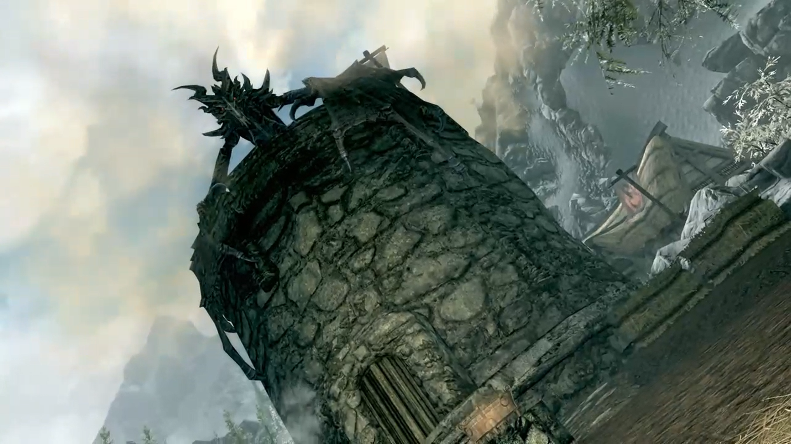

História de Skyrim
A história do jogo acontece cerca de 200 anos após os eventos de Oblivion, durante o ano 201 da 4th Era (4E201). O High King of Skyrim foi morto, e uma guerra civil ocorreu por toda a região. De um lado, os que desejavam se separar do império agora em ruínas. Do outro, os que ainda queriam permanecer como parte dele, acreditando na preservação de valores. Para piorar a situação, uma profecia de Elder Scrolls anunciava o retorno dos dragões de Alduin, o deus nórdico da destruição.
O jogador, que é um Dragonborn, começa o jogo como um prisioneiro. Depois de ser capturado tentando atravessar as fronteiras de Skyrim, o jogador e alguns outros prisioneiros, incluindo Ralof e soldados do Stormcloaks, uma facção rebelde que luta contar o império, e o líder do grupo, Ulfric Stormcloak, são levados para uma pequena vila para serem executados por soldados do império. Porém, alguns segundos antes da cabeça do jogador ser cortada, um dragão aparece e ataca todos os presentes

Em meio ao caos, os prisioneiros aproveitam a oportunidade para fugir. Os soldados do Stormcloaks junto com Ulfric Stormcloak ajudam o jogador a encontrar um lugar seguro em uma torre. Porém, o dragão ataca a estrutura e o jogador é obrigado a sair e tentar fugir sozinho. No caminho, se encontra com um soldado imperial chamado Hadvar, que inicialmente ajudava na execução dos prisioneiros.
Ele diz para segui-lo até um lugar mais seguro. No meio do caminho, o jogador encontra Ralof novamente, e então decide entre continuar com Hadvar, soldado imperial, ou com Ralof, soldado dos Stormcloaks.
Durante o jogo, é revelado que a guerra civil de Skyrim é o último acontecimento de uma profecia anunciada pelo Elder Scrolls, e que os Dragonborn, entidades nascidas com a alma de um dragão (como o jogador) são os únicos capazes de derrotar o deus nórdico Alduin e os dragões. Eventualmente, o jogador conhece Esbern, um dos últimos remanescentes dos Blades.